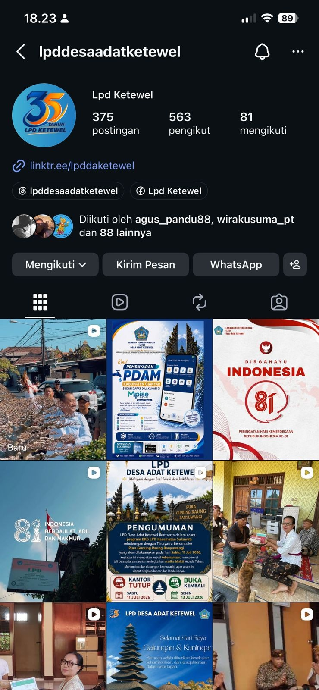

DIGITALISASI LAYANAN
Digitalisasi Layanan LPD Desa Adat Ketewel
Pengembangan dan penerapan layanan digital untuk mendukung transformasi pelayanan LPD Desa Adat Ketewel agar lebih efektif, cepat, terdokumentasi dan mudah diakses.
Lihat Bukti →